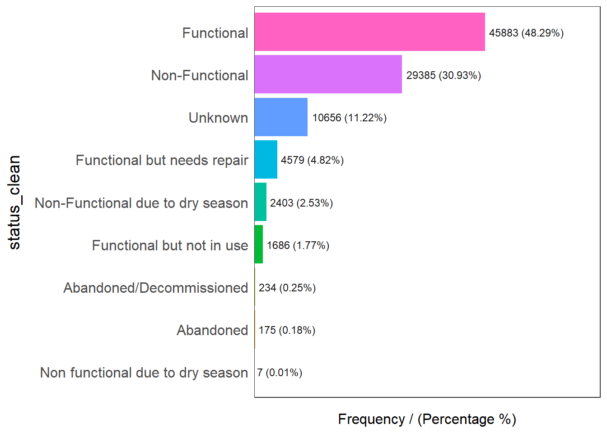
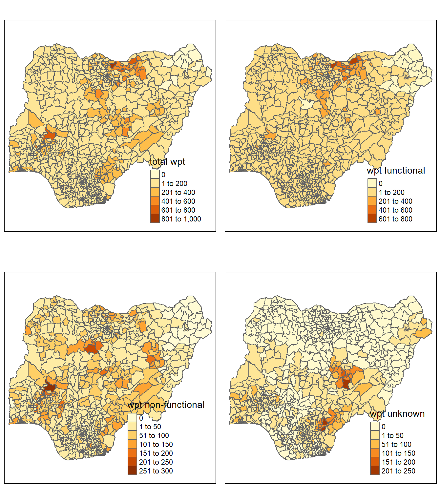

pacman::p_load(sf, tidyverse, tmap, spdep, funModeling)In-Class Exercise 2
Data Preparation for Take-Home Exercise 1
This exercise is to prepare the datasets for take-home exercise 1 on analysing availability of waterpoints in Nigeria. The details of the exercise can be found here.
1. Setting Up
Loading Packages
We will use the following packages:
sf: import geospatial datasetstidyverse: manipulate aspatial dataspdep: compute spatial weights and autocorrelationtmap: plot mapsfunModeling: quick EDA
Importing Waterpoint Data
The waterpoint dataset is downloaded from here and the data dictionary here. The file has been saved as “Wdx_plus_full.csv”. In this exercise, I will use the csv format. Although the shp file format would be preferable, I was unable to complete the download without the file getting corrupted. Nonetheless, we can simply use the longitude and latitude data provided to convert it to an sf object.
The following code imports the waterpoint dataset and keeps only the datapoints from Nigeria.
wp_csv <- read_csv("data/WPdx_plus_full.csv") %>%
filter(`#clean_country_name`=="Nigeria")glimpse(wp_csv)We can see that we do not need most of the variables to analyse the status of waterpoints. The following code chunk keeps only the relevant variables and removes the special characters from the variable names.
wp_csv <- wp_csv %>%
select(c(3:4, 22))%>%
rename_with(~str_replace(.x, "#", ""))Now we can convert it to sf format. From the data dictionary, we know that the original GCS of the data is WGS1984 (EPSG:4326) from the data dictionary. We need to project it to the EPSG:26391 CRS later. However, as we will be using the st_intersects() function later, we will keep retain the EPSG:4326 GCS first.
wp <- st_as_sf(wp_csv,
coords = c("lon_deg", "lat_deg"),
crs=4326)Now we save the smaller version of the file.
write_rds(wp, "data/wp_nga.rds")Importing Nigeria LGA Boundary Data
This exercise also usess the Nigeria Level-2 Administrative Boundary (also known as Local Government Area) polygon dataset from geoBoundaries.
nga <- st_read(dsn = "data",
layer = "geoBoundaries-NGA-ADM2",
crs = 4326)Reading layer `geoBoundaries-NGA-ADM2' from data source
`D:\lins-92\ISSS624\In-class_EX02\data' using driver `ESRI Shapefile'
Simple feature collection with 774 features and 5 fields
Geometry type: MULTIPOLYGON
Dimension: XY
Bounding box: xmin: 2.668534 ymin: 4.273007 xmax: 14.67882 ymax: 13.89442
Geodetic CRS: WGS 842. Data Wrangling
The following code chunk imports the reduced waterpoint data file which was saved with geometries. We perform some further cleaning by replacing the na values in the status_clean variable as “Unknown”.
wp_nga <- read_rds("data/wp_nga.rds") %>%
mutate(status_clean = replace_na(status_clean, "Unknown"))We can use the freq() function of the funModeling package to plot the distribution of status of waterpoints.
freq(data=wp_nga,
input = 'status_clean')Warning: The `<scale>` argument of `guides()` cannot be `FALSE`. Use "none" instead as
of ggplot2 3.3.4.
ℹ The deprecated feature was likely used in the funModeling package.
Please report the issue at <https://github.com/pablo14/funModeling/issues>.
status_clean frequency percentage cumulative_perc
1 Functional 45883 48.29 48.29
2 Non-Functional 29385 30.93 79.22
3 Unknown 10656 11.22 90.44
4 Functional but needs repair 4579 4.82 95.26
5 Non-Functional due to dry season 2403 2.53 97.79
6 Functional but not in use 1686 1.77 99.56
7 Abandoned/Decommissioned 234 0.25 99.81
8 Abandoned 175 0.18 99.99
9 Non functional due to dry season 7 0.01 100.00There are types of status but we only really need to know whether the water point is functional or not. Those that were na values will continue to be categorised as unknown status.
Extracting Functional Waterpoints
wpt_functional <- wp_nga %>%
filter(status_clean %in%
c("Functional",
"Functional but not in use",
"Functional but needs repair"))freq(data=wpt_functional,
input = 'status_clean')
status_clean frequency percentage cumulative_perc
1 Functional 45883 87.99 87.99
2 Functional but needs repair 4579 8.78 96.77
3 Functional but not in use 1686 3.23 100.00Extracting Non-Functional Waterpoints
wpt_nonfunctional <- wp_nga %>%
filter(status_clean %in%
c("Abandoned/Decommissioned",
"Abandoned",
"Non-Functional",
"Non functional due to dry season",
"Non-Functional due to dry season"))freq(data=wpt_nonfunctional,
input = 'status_clean')
status_clean frequency percentage cumulative_perc
1 Non-Functional 29385 91.25 91.25
2 Non-Functional due to dry season 2403 7.46 98.71
3 Abandoned/Decommissioned 234 0.73 99.44
4 Abandoned 175 0.54 99.98
5 Non functional due to dry season 7 0.02 100.00Extracting Unknown Status Waterpoints
wpt_unknown <- wp_nga %>%
filter(status_clean == "Unknown")Point-in-Polygon Count
The following code chunk counts the number of points (functional, non-functional and unknown separately) in each polygon of the administrative boundary data and saves type each as a variable in the administrative data attribute table.
nga_wp <- nga %>%
mutate(`total wpt` = lengths(
st_intersects(nga, wp_nga))) %>%
mutate(`wpt functional` = lengths(
st_intersects(nga, wpt_functional))) %>%
mutate(`wpt non-functional` = lengths(
st_intersects(nga, wpt_nonfunctional))) %>%
mutate(`wpt unknown` = lengths(
st_intersects(nga, wpt_unknown)))Next, we compute the proportions of functional and non-functional waterpoints for each area. We can also perform the transformation now since we have done the st_intersects() already. Save the file.
nga_wp <- nga_wp %>%
mutate(pct_functional = `wpt functional`/`total wpt`) %>%
mutate(`pct_non-functional` = `wpt non-functional`/`total wpt`) %>%
st_transform(crs = 26391) %>%
write_rds("data/nga_wp.rds")3. Simple Visualisation of Waterpoint Distribution
nga_wp <- read_rds("data/nga_wp.rds")
total <- qtm(nga_wp, "total wpt")
wp_functional <- qtm(nga_wp, "wpt functional")
wp_nonfunctional <- qtm(nga_wp, "wpt non-functional")
unknown <- qtm(nga_wp, "wpt unknown")
tmap_arrange(total, wp_functional, wp_nonfunctional, unknown, asp=1, ncol=2)